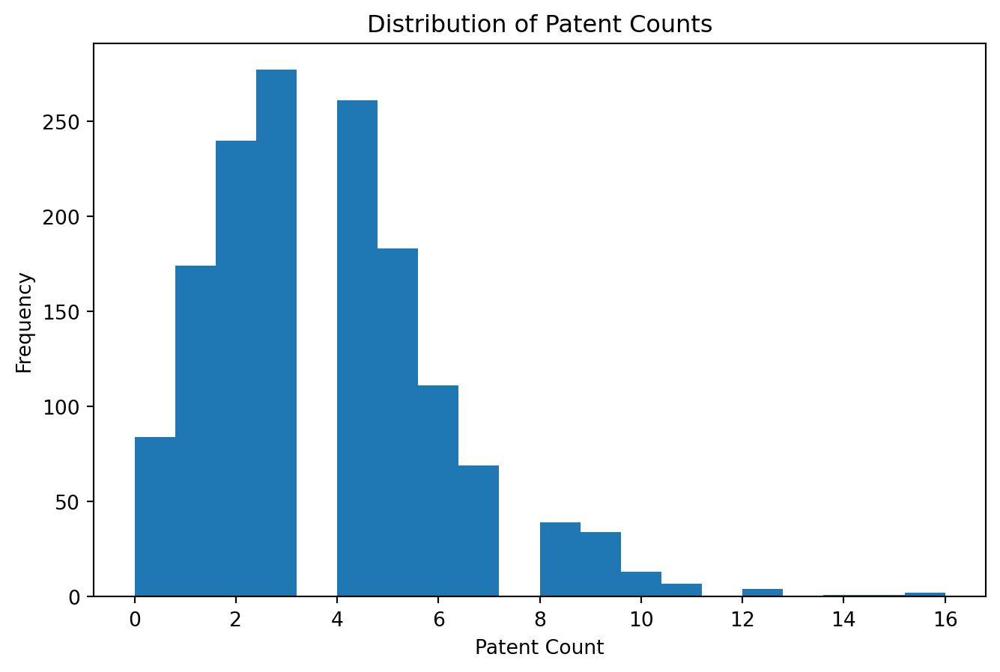
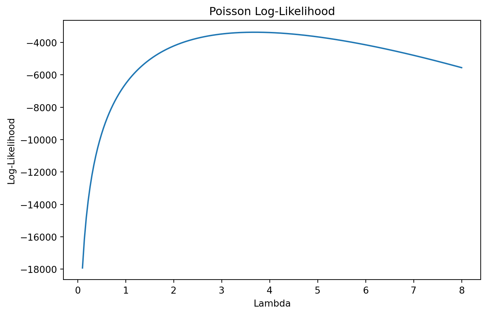

Poisson Regression and Maximum Likelihood Estimation
A Case Study of Blueprinty’s Software and Patent Awards
Author
Corrine Chen
Published
May 28, 2026
Introduction
Blueprinty is a software company that develops tools for engineering firms preparing patent applications for submission to the United States Patent Office. The company claims that firms using its software obtain more approved patents than firms that do not use the software. To evaluate this claim, this analysis studies data from 1,500 engineering firms, including patent counts, customer status, firm age, and geographic region.
Because patent counts are non-negative integers, Poisson regression provides a natural modeling framework. Using Maximum Likelihood Estimation (MLE), this analysis estimates whether Blueprinty customers tend to receive more patents after controlling for observable firm characteristics such as age and region.
Exploring the Data
Before estimating the Poisson regression model, it is useful to explore the distribution of the main variables and examine how Blueprinty customers differ from non-customers. In particular, the exploratory analysis helps determine whether customer firms systematically vary in age or geographic location, both of which may independently influence patent production.
import pandas as pdimport numpy as npimport matplotlib.pyplot as pltimport scipy.optimize as optimport statsmodels.api as smimport statsmodels.formula.api as smfdf = pd.read_csv("./blueprinty.csv")df.describe(include="all")
patents
region
age
iscustomer
count
1500.000000
1500
1500.000000
1500.000000
unique
NaN
5
NaN
NaN
top
NaN
Northeast
NaN
NaN
freq
NaN
601
NaN
NaN
mean
3.684667
NaN
26.357667
0.320667
std
2.352500
NaN
7.242528
0.466889
min
0.000000
NaN
9.000000
0.000000
25%
2.000000
NaN
21.000000
0.000000
50%
3.000000
NaN
26.000000
0.000000
75%
5.000000
NaN
31.625000
1.000000
max
16.000000
NaN
49.000000
1.000000
Distribution of Patent Counts
plt.figure(figsize=(8,5))plt.hist(df["patents"], bins=20)plt.xlabel("Patent Count")plt.ylabel("Frequency")plt.title("Distribution of Patent Counts")plt.show()print(df["patents"].describe())print("Variance:", df["patents"].var())

count 1500.000000
mean 3.684667
std 2.352500
min 0.000000
25% 2.000000
50% 3.000000
75% 5.000000
max 16.000000
Name: patents, dtype: float64
Variance: 5.534254391816766
Patent counts are non-negative integers and exhibit a noticeable right-skewed distribution, with many firms receiving relatively few patents and a smaller number receiving substantially more. This pattern is characteristic of count data and supports the use of a Poisson regression framework.
The histogram comparison suggests that Blueprinty customers tend to receive more patents than non-customers. The average patent count for non-customers is approximately 3.47, while the average for customers is approximately 4.13. At first glance, this appears consistent with Blueprinty’s marketing claim.
However, these raw differences alone are not sufficient to establish causality. Customers may differ from non-customers in important ways unrelated to the software itself. The next step is therefore to examine how customer status is associated with firm age and regional location.
The regional composition of customers and non-customers differs substantially. Blueprinty customers are disproportionately concentrated in the Northeast, while non-customers are more evenly distributed across regions. This matters because certain regions may contain more innovation-focused industries or stronger research ecosystems, which could independently increase patent production.
Customers appear slightly older on average than non-customers. Older firms may possess larger research teams, more accumulated expertise, and greater financial resources, all of which could influence patent production independently of Blueprinty’s software. Controlling for age is therefore important when estimating the relationship between Blueprinty usage and patent counts.
A Simple Poisson Model via Maximum Likelihood
Patent counts are non-negative integers, making the Normal distribution a poor modeling choice. A Poisson distribution is a more natural starting point for count outcomes because it is specifically designed for non-negative integer-valued data.
We begin with the simple Poisson model:
\[
Y_i \sim \text{Poisson}(\lambda)
\]
where \(\lambda\) represents the expected number of patents.
The probability mass function of the Poisson distribution is:
Because the observations are assumed to be independent and identically distributed, the joint likelihood is the product of each firm’s individual Poisson probability:
from scipy.special import gammalndef poisson_loglikelihood(lambda_param, Y):if lambda_param <=0:return-np.inf ll = np.sum(-lambda_param+ Y * np.log(lambda_param)- gammaln(Y +1) )return ll
Plotting the Log-Likelihood
Y = df["patents"].valueslambda_grid = np.linspace(0.1, 8, 200)ll_values = [poisson_loglikelihood(l, Y) for l in lambda_grid]plt.figure(figsize=(8,5))plt.plot(lambda_grid, ll_values)plt.xlabel("Lambda")plt.ylabel("Log-Likelihood")plt.title("Poisson Log-Likelihood")plt.show()

The log-likelihood curve is concave and reaches its maximum near the sample mean of the patent counts. Visually, the MLE can be identified as the value of \(\lambda\) where the curve peaks.
Analytical MLE
Differentiating the log-likelihood with respect to \(\lambda\) and setting the derivative equal to zero yields:
The numerical optimizer produces an estimate almost identical to the sample mean. This occurs because the Poisson likelihood is maximized when \(\lambda\) equals the average observed patent count.
Poisson Regression
The simple Poisson model assumes every firm has the same patent rate \(\lambda\). This assumption is unrealistic because firms differ in age, location, and customer status. We therefore extend the model to allow each firm to have its own expected patent rate:
\[
Y_i \sim \text{Poisson}(\lambda_i)
\]
where
\[
\lambda_i = \exp(X_i'\beta)
\]
The exponential link function ensures that predicted patent rates remain strictly positive, even though the linear index \(X_i'\beta\) can take any real value.
Age squared is included because the relationship between firm age and innovation is unlikely to be perfectly linear. One regional category is omitted to avoid perfect multicollinearity with the intercept.
Coding the Regression Log-Likelihood
def poisson_regression_loglikelihood(beta, Y, X): linear_index = X @ beta lambda_i = np.exp(linear_index) ll = np.sum( Y * linear_index- lambda_i- gammaln(Y +1) )return ll
The coefficient estimates from the hand-coded MLE and the built-in GLM implementation closely match, which validates the correctness of the likelihood function and optimization procedure. Small differences in standard errors can arise because the numerical optimizer approximates the Hessian matrix.
Interpreting the Results
The coefficient estimates are generally sensible and align with expectations about firm innovation behavior.
The coefficient on iscustomer is positive and statistically significant. This suggests that Blueprinty customers tend to receive more patents, even after controlling for firm age and regional location. Because Poisson regression is multiplicative rather than additive, coefficients are interpreted in percentage terms.
The estimated customer coefficient is approximately 0.21, implying that Blueprinty customers are associated with roughly:
\[
(e^{0.21} - 1) \times 100 \approx 23\%
\]
more patents than otherwise similar non-customers.
The coefficient on age is positive, while the coefficient on age_sq is negative. This pattern suggests diminishing returns to firm age. Younger firms may initially become more productive as they accumulate expertise, expand research capacity, and develop more sophisticated innovation pipelines. However, the negative squared term indicates that the marginal effect of age eventually declines, implying that patent production levels off for very mature firms.
The regional coefficients capture systematic differences in innovation activity across geographic areas. Positive coefficients indicate regions where firms tend to receive more patents relative to the omitted baseline region, while negative coefficients indicate relatively lower patent activity. These differences may reflect variation in industry concentration, access to skilled labor, research ecosystems, or regional innovation policies.
Overall, the signs and magnitudes of the coefficients appear economically reasonable. Older firms and Blueprinty customers tend to receive more patents, while regional differences highlight the importance of controlling for geographic heterogeneity when modeling innovation outcomes.
The Effect of Blueprinty’s Software
The coefficients from a Poisson regression are not directly interpretable as additional patents because the model is multiplicative in \(\lambda\) rather than additive in \(Y\). To obtain a more intuitive estimate of the effect of Blueprinty’s software, we construct two counterfactual datasets:
One where every firm is treated as a non-customer.
One where every firm is treated as a customer.
In both cases, all other firm characteristics — including age and region — are held fixed at their observed values.
The vectors \(\hat{y}_0\) and \(\hat{y}_1\) represent the predicted number of patents for each firm under the two counterfactual scenarios. Taking the average difference between these predictions produces an estimate of the average effect of being a Blueprinty customer.
The estimated average effect of Blueprinty’s software is approximately 0.793 additional patents over five years, holding firm age and regional location fixed at their observed values.
This result provides evidence consistent with Blueprinty’s marketing claim that its software is associated with stronger patent performance. However, this analysis remains observational rather than experimental. Although the regression controls for observed differences across firms, unobserved characteristics may still differ between customers and non-customers. For example, firms with stronger innovation cultures or larger R&D budgets may both adopt Blueprinty’s software and produce more patents regardless of the software itself. As a result, the analysis should be interpreted as evidence of association rather than definitive proof of causation.
Conclusion
This analysis used Poisson regression and Maximum Likelihood Estimation to study whether Blueprinty’s software is associated with higher patent counts among engineering firms. After controlling for firm age and regional location, Blueprinty customers were estimated to produce more patents than non-customers.
The exercise also demonstrated how Poisson regression can be derived from first principles using the likelihood function and estimated numerically using optimization techniques. The close agreement between the hand-coded MLE estimates and the built-in GLM implementation provides additional confidence in the results.